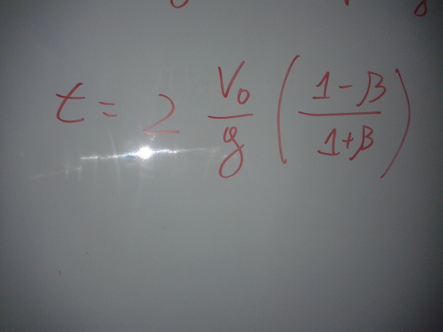
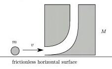
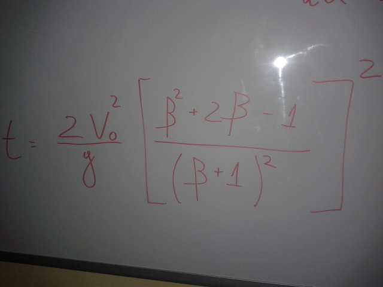
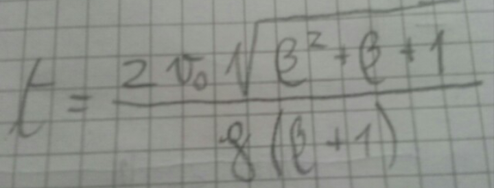

una sfera di massa \(m\) si sta muovendo senza attrito su un piano con velocità \(v_0\) verso un grosso blocco di massa \(M\) all'interno del quale è stata scavata una cavità che parte dal punto in cui la sfera urta il blocco ed è ben arrotondato fino a sbucare VERTICALMENTE dell'estremità in alto del blocco ( potete immaginarvi la cavità come una specie di percorso all'interno del blocco, simile a quelli che i vermi fanno nelle mele ); la cavità è tale che la sfera riesce a passarci perfettamente ( se fosse poco piu grande non passerebbe ) e senza attrito, e tutti gli urti sono elastici. La sfera sbuca dall'estremità superiore e schizza verso l'alto raggiungendo un altezza molto molto maggiore dell'altezza del blocco, dopo di che ricade si rinfila nel blocco e esce dall'estremità inferiore. Quanto tempo trascorre da quando la pallina urta il blocco a quando torna nel punto in cui era avvenuto quell'urto? esprimere il risultato in funzione di \(\beta=\frac{M}{m}\).
P.S. per anticipare probabili commenti del tipo "ma non dovrebbe dipendere anche da..." , "ma tra i dati non manca sapere..." ecc..., rispondo subito di no! il problema va risolto solo con le cose che ho detto sopra e non è così difficile :D
CapitanFindus6 apr 2015, 23:51
l'ho letto un po di volte ma non mi è chiara la situazione. Il blocco sarebbe come un cubo su un piano? E perchè la sfera dovrebbe urtare il blocco se entra nella cavità?
Non potresti fare un disegno? :roll: :roll: :roll: :roll: :roll:
andrea966 apr 2015, 23:59
Domani provo a fare un disegno comunque il blocco è come un cubo su un piano e per urto si intende il momento in cui la sfera giunge dove c è il blocco, poi entra dentro ecc... però per urto intendevi quel momento.
gluonstrongforce7 apr 2015, 0:40
È questo?
Allegati

È questo?
20150407_003617.jpg (68.52 KiB) Visto 9396 volte
Davide967 apr 2015, 10:19
Viene cosí anche a me :D .
Simone2567 apr 2015, 11:19
Intanto per chi avesse bisogno del disegno... :)
Allegati

IMG-20150407-WA0001.jpg (4.43 KiB) Visto 9360 volte
andrea967 apr 2015, 13:15
@simone256 grazie!! Perche non sono capace a postare le immagini :D
comunque quel risultato è sbagliato. Tra l altro ti viene che se M>m hai un tempo negativo ed è un po assurda la cosa visto che se consideri il caso limite in cui il blocco è molto piu pesante della sfera il primo resta fermo e la sfera tornerá certamente in quel punto.
Carlo967 apr 2015, 14:54
Nella marea di calcoli è molto possibile che mi sia perso qualche costante, ma come dipendenza da beta a me viene
no non viene quello.
Però se nessuno posta per lo meno l'idea che l'ha portato al suo risultato non posso dirvi dove avete sbagliato e penso vi interessi...
gluonstrongforce7 apr 2015, 17:27
Nel caso M>>m
Allegati

20150407_151747.jpg (69.58 KiB) Visto 9281 volte
Davide967 apr 2015, 17:47
Io ho usato la conservazione dell'energia e della quantitá di moto ma a questo punto credo di averlo strasemplificato. Non riesco a mettere la foto peró.
andrea967 apr 2015, 18:32
@davide96 prova a riassumere il procedimento mettendo i risultati che ti vengono volta per volta senza scrivere i calcoli.
@gluonstrongforce attento quell equazione è sbagliata dimensionalmente e tra l altro assumendo valida quella condizione che hai detto si potrebbe anche semplificare.
P. S. se avete capito l idea fondamentale per risolvere il problema il caso M>>m dovrebbe essere cosi banale che potete farlo a mente durante una partita a pallone mentre vi trovate a tu per tu con il portiere avversario.
gluonstrongforce7 apr 2015, 18:56
Si, scusa. Mi è scappato un quadrato di troppo. Inoltre, riflettendoci, penso che se M>>m, allora è come se M non si muovesse affatto e quindi T= 2V°/g
CapitanFindus7 apr 2015, 18:58
andrea96 ha scritto:
P. S. se avete capito l idea fondamentale per risolvere il problema il caso M>>m dovrebbe essere cosi banale che potete farlo a mente durante una partita a pallone mentre vi trovate a tu per tu con il portiere avversario.
addirittura ahahahahah
io devo finire la mia tabella di marcia di preparazione per senigallia adesso ma stasera lo provo a fare!
Simone2567 apr 2015, 19:02
andrea96 ha scritto:dovrebbe essere cosi banale che potete farlo a mente durante una partita a pallone mentre vi trovate a tu per tu con il portiere avversario.
Ameno che la partita sia importantissima! Tipo la finale di champions o la partita in spiaggia che ci attende a senigallia :twisted:
gluonstrongforce7 apr 2015, 19:05
vengo a Senigallia solo per quella!
andrea967 apr 2015, 19:34
@gluonstronforce esatto viene quello nel caso M>>m
@simone256 si ma nella partita di venerdì per trovarci davanti alla porta avversaria dovremmo correre per molto molto tempo visto che il campo è misurato in unitá astronomiche.
6frusciante97 apr 2015, 19:41
Anche a me nel caso M>>m mi veniva così ma non credo di essere sulla buona strada nella risoluzione del problema :mrgreen:
Ti sembra possibile che se le masse sono uguali viene t=0?
Davide967 apr 2015, 21:03
Ora sta la grande juve, poi domani in treno riprovo e cerco anche di capire come mettere le foto.
quazar187 apr 2015, 21:08
Effettivamente no... ci penserò anche io in treno ;)
andrea967 apr 2015, 21:10
misa che domani trenitalia festeggierà il record di pensieri nei suoi treni. :D
Davide967 apr 2015, 21:44
Ma poi, nel caso M>>m il blocco non dovrebbe restare fermo? Con t=2v/g indipendente da M/m?
sall967 apr 2015, 21:57
Probabilmente no ma \(\displaystyle t=2\dfrac{v_0}{g}\sqrt{\dfrac{\beta}{\beta+1}}\) ?
Tex967 apr 2015, 22:00
Anche a me viene lo stesso! Però puoi semplificare un \(\beta +1\)
sall967 apr 2015, 22:04
Ah giusto ora lo faccio :lol:
andrea967 apr 2015, 23:05
@davide96 si
@sall96 no
Simone2567 apr 2015, 23:48
Davide96 ha scritto:Ora sta la grande juve
L'hai chiamata :lol: :mrgreen:
3 è proprio un gran bel numero!
Simone2567 apr 2015, 23:57
Comunque ragazzi un intervallo di tempo è dato da salita più discesa! Dipende solo dalla velocitá di salita iniziale che si ricava usando qualche conservazione. Poi il tempo di ritorno si ricava grazie alla distanza percorsa dal blocco nel primo intervallo tempo e alla velocitá con cui torna la pallina (anche questa ricavabile con qualche conservazione)!
Davide968 apr 2015, 9:53
Simone256 ha scritto:
Davide96 ha scritto:Ora sta la grande juve
L'hai chiamata :lol: :mrgreen:
3 è proprio un gran bel numero!
Be la settimana é iniziata bene :D
Davide968 apr 2015, 10:11
Cosí?
Allegati

Screenshot_2015-04-08-10-08-53-1.png (172.46 KiB) Visto 7279 volte
Davide968 apr 2015, 10:13
Wow fa niente se é sbagliato sono riuscito a mettere la foto finalmente!
andrea968 apr 2015, 12:58
No
andrea9612 apr 2015, 13:08
Visto che sembra che il problema sia troppo difficile ( sono state tirate fuori decine di risultati sbagliati ) scrivo il risultato corretto e il primo che posta un procedimento per arrivare a quel risultato può proseguire senza aspettare che do l'ok. \(t=\frac{2v_0}{g}\frac{\beta}{\beta-1}\sqrt{\frac{\beta}{\beta+1}}\).
sall9612 apr 2015, 21:44
Mi continua a venire sempre la stessa cosa :evil:
Pero' non capisco il risultato: se \(M<m\) viene un tempo negativo?
andrea9612 apr 2015, 22:42
sall96 ha scritto:
Pero' non capisco il risultato: se \(M<m\) viene un tempo negativo?
certo! come fai a essere sicuro che per ogni rapporto delle due masse la sfera riesce a tornare nel punto in cui è avvenuto l'ingresso?
sall9612 apr 2015, 22:51
Ecco l'errore! Io pensavo che fosse un'ipotesi del testo :roll:
phyknight18 mag 2015, 20:30
andrea96 ha scritto:Visto che sembra che il problema sia troppo difficile ( sono state tirate fuori decine di risultati sbagliati ) scrivo il risultato corretto e il primo che posta un procedimento per arrivare a quel risultato può proseguire senza aspettare che do l'ok. \(t=\frac{2v_0}{g}\frac{\beta}{\beta-1}\sqrt{\frac{\beta}{\beta+1}}\).
Dato che la staffetta è morta e io (forse) ho un bel problema da proporre...posso proseguire io?
Ah, poi, se proprio vogliamo fare le cose con correttezza, qui si usa la conservazione di quantità di moto e energia cinetica ai due urti e si trovano tutte le velocità, si fanno i due conti che escono e viene il tuo risultato
Ma forse era anche inutile dirlo
andrea9618 mag 2015, 20:34
Sisi vai pure! :D
Poi se qualcuno volesse sapere la soluzione di sto problema (ma non credo visto come si è sviluppato il tutto) l ho preso dal sito delle olimpiadi americane di fisica.